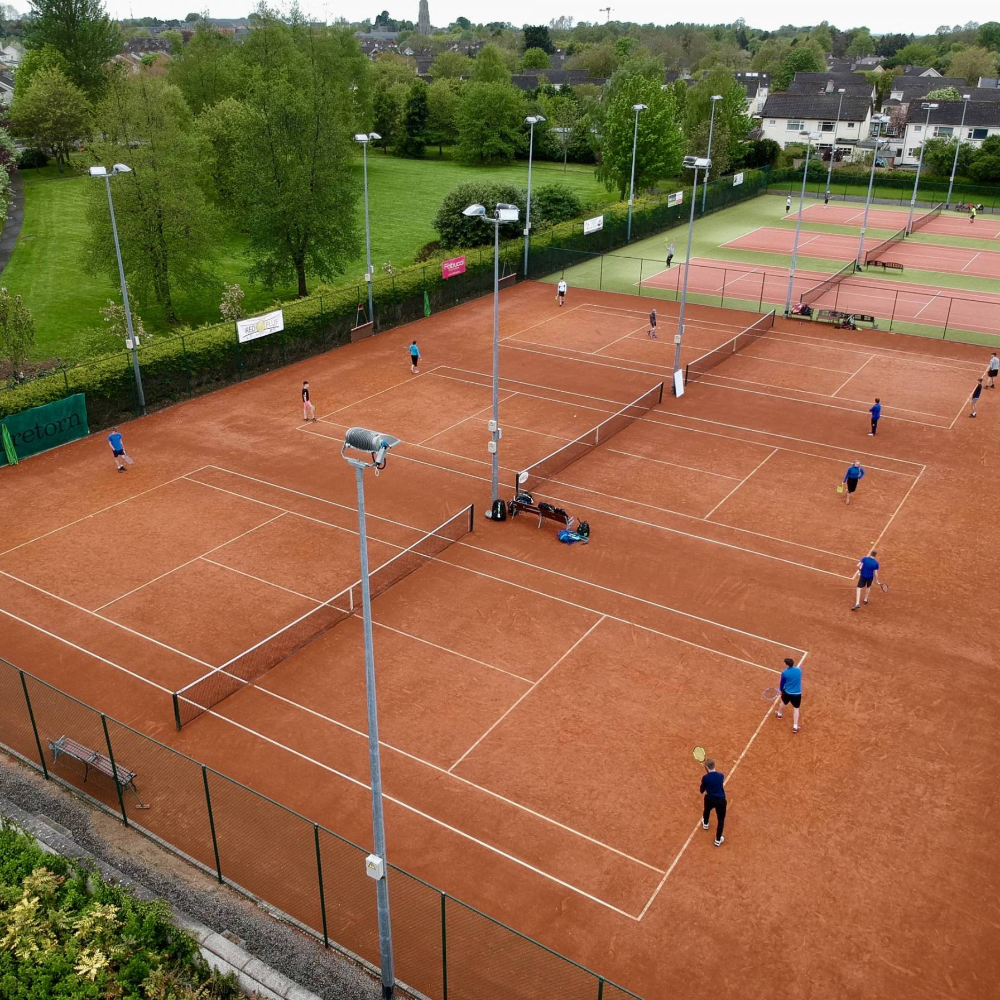

We cover a wide variety of different skill levels whatever the age may be. We provide lessons to anyone from as young as they can walk until they can't. Furthermore, we have private lessons for any person with a handicap with our special trainer in one of our indoor courts.
What we offer is an original community feeling to the club where everyone through time gets to know each other. We do so by organising multiple events around holiday periods open to everyone.
Our club has been running for over 40 years and has some noticeable achievements under it's name. We give access to all the courts, of which we have 20 both indoor and outdoor, for anyone who wants to practice in their own time or spend an afternoon with friends or family playing tennis. On signing up to the club, you will get an electronic personal badge which will allow you to enter and leave the entire peremises and each courts.
For further information about upcoming tournaments or the present week's timetable, make sure to visit our Events and Lessons page which you can find at the top of this page.